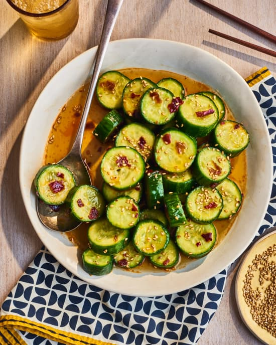

Taiwanese Smashed Cucumber
Ingredients
- 5 Persian cucumbers (about 1 pound total)
- 1/2 teaspoon kosher salt
- 3 cloves garlic
- 1/4 cup rice vinegar
- 2 tablespoons mirin
- 2 tablespoons granulated sugar
- 2 teaspoons toasted sesame oil
- 1 to 2 teaspoons chili crisp, such as Lao Gan Ma (optional)
- 1 teaspoon white sesame seeds
Preperation Time - 10 mins
Instructions
-
Trim and cut 5 Persian cucumbers crosswise into 1/2-inch-thick rounds.
Place in a strainer set over or a bowl or in the sink, sprinkle with 1/2
teaspoon kosher salt, and toss to combine. Let sit for 20 minutes.
Meanwhile, make the marinade.
-
Mince 3 garlic cloves (2 teaspoons) and place in a small bowl. Add 1/4 cup
rice vinegar, 2 tablespoons mirin, 2 tablespoons granulated sugar, 2
teaspoons toasted sesame oil, and 1 teaspoon to 2 teaspoons chili crisp if
desired. Stir until the sugar is dissolved.
-
When the cucumbers are ready, rinse under cold running water. Pat dry with
towels. Place the cucumbers in a large zip-top bag and add the marinade.
Seal the bag. Lay the bag flat in the refrigerator so the cucumbers sit in
a single layer. Let the cucumbers marinate at least 4 hours or up to
overnight, flipping the bag halfway through.
-
To serve, remove the cucumbers from the marinade and stack cut-side up on
a serving plate. Garnish with 1 teaspoon white sesame seeds.
